Clinical Medicine and Surgery I · Exam 1 · every staged, graded or threshold system in the block
Benign Skin Lesions · slides 33–34
The deck presents this as the National Pressure Injury Advisory Panel table, shown for both lightly and darkly pigmented skin. Both slides are images — the text does not extract, so this is transcribed from the pictures. Stage 1 is the one to know cold: the erythema is non-blanchable and the skin is intact.
| Stage 1 | Localised area of non-blanchable erythema of intact skin. |
| Stage 2 | Partial-thickness skin loss with exposed dermis. Wound bed is viable, pink or red, and can be moist, shiny or dry. |
| Stage 3 | Full thickness skin loss. Adipose (fat) tissue is visible. |
| Stage 4 | Full thickness skin and tissue loss. Exposed fascia, muscle, tendon, ligament, cartilage or bone. |
| Unstageable | Obscured full thickness skin and tissue loss. Extent cannot be determined because it is obscured by slough or eschar. |
| Deep Tissue | Persistent non-blanchable deep red / purple discolouration. Skin can be intact or non-intact. |
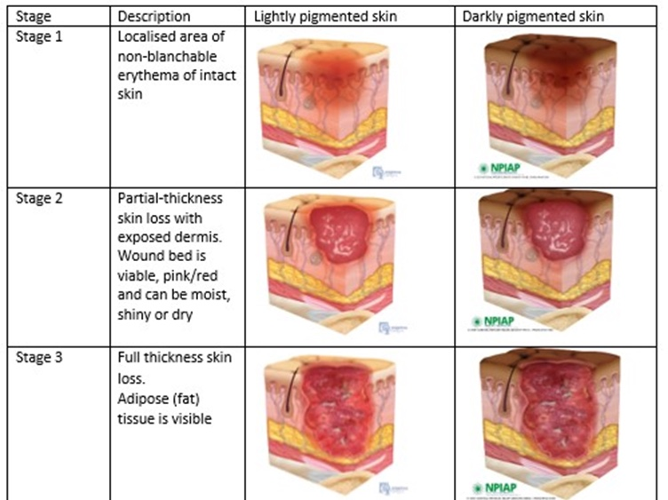
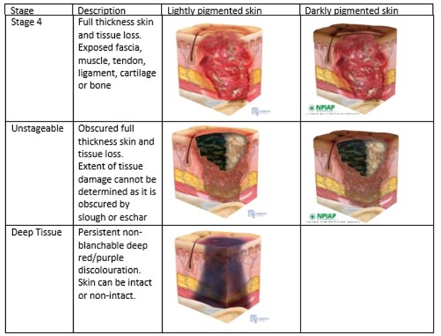
Dermatology II · slides 91–95
Only first and second degree are taught for sunburn. Blistering is the line between them. Systemic features are graded separately rather than as a third degree.
| First degree | Erythema, warmth, tenderness. Confined to the epidermis. No blistering. Resolves in 3–5 days with desquamation. |
| Second degree | Blistering, intense pain, oedema. Partial dermal involvement. Takes 1–2 weeks; risk of secondary infection. |
| Systemic (“sun poisoning”) | Fever, chills, nausea and vomiting, dehydration, headache, tachycardia — particularly with large body surface area involvement. |
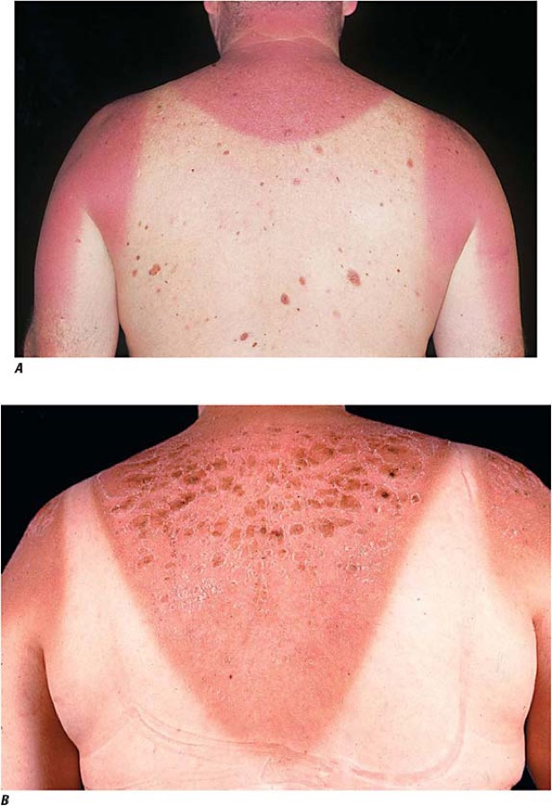
Dermatology II · slides 82, 88, 126
One disease spectrum split by body surface area of epidermal detachment. This percentage is the whole distinction — mucosal involvement, drug trigger and prodrome occur in both and separate nothing.
| Stevens-Johnson syndrome | Less than 10% body surface area detachment, with mucosal erosions. Hospitalise; stop the drug. |
| Overlap | 10–30% — the decks define SJS and TEN by their thresholds and treat the middle as the overlap band. |
| Toxic epidermal necrolysis | More than 30% body surface area. Positive Nikolsky sign, “wet parchment” appearance, severe mucosal erosion. Mortality up to 30–35%. Burn unit or intensive care is mandatory. |
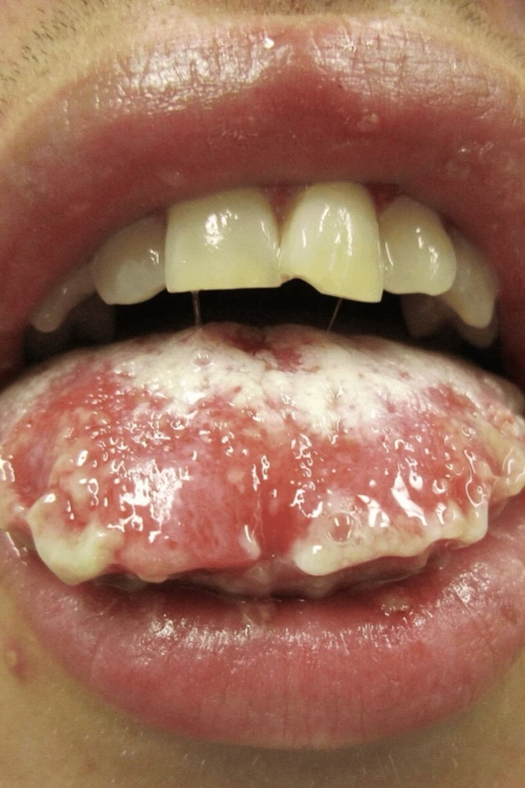
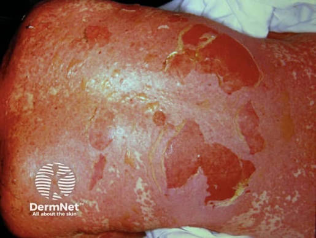
Dermatology II · slide 89
Calculated within 24 hours of admission and repeated on day 3. Each variable scores one point.
| The seven variables | Age >40 years · malignancy present · heart rate >120/min · initial body surface area detachment >10% · serum urea nitrogen >10 mmol/L (28 mg/dL) · serum bicarbonate <20 mEq/L · serum glucose >14 mmol/L (252 mg/dL) |
| Score 0–1 | Predicted mortality 3.2% |
| Score 2 | Predicted mortality 12% |
| Score 3 | Predicted mortality 35% |
| Score 4 | Predicted mortality 58% |
| Score 5 or more | Predicted mortality 90% |
Dermatology II · slide 122
Predicts baseline ultraviolet sensitivity and guides photoprotection counselling. It grades how skin responds to ultraviolet light — burning and tanning history — not what colour it is. The deck is emphatic that all six types are susceptible to cumulative ultraviolet damage, photoaging and skin cancer — risk varies, it does not disappear. Types IV–VI are not immune; delayed diagnosis is common because the index of suspicion is lower, and melanoma in darker-skinned people is frequently diagnosed at an advanced stage.
| Type I | Very fair, red or blonde hair, freckles, blue or green eyes. Always burns, never tans. Skin cancer risk: highest. |
| Type II | Fair skin, light hair, blue or hazel eyes. Usually burns, sometimes tans. Risk: very high. |
| Type III | Medium skin, brown hair, hazel or brown eyes. Sometimes burns, always tans. Risk: high. |
| Type IV | Olive or light brown skin, dark hair and eyes. Rarely burns, tans easily. Risk: moderate. |
| Type V | Brown skin, dark hair and eyes. Minimally burns, tans deeply. Risk: lower — not absent. |
| Type VI | Deeply pigmented dark brown or black skin. Never burns, deeply pigmented. Risk: lowest — not absent. |
Dermatology II · slide 29
Four inherited types, separated by how deep in the skin the split occurs — listed here from most superficial to deepest. Combined prevalence is 8–19 per million live births. EB acquisita is the odd one out: autoimmune (anti-COL7A1 immunoglobulin G), not genetic.
| EB Simplex (EBS) | Intraepidermal cleavage. Keratin 5/14 mutations; autosomal dominant. Most common, about 70% of cases. |
| Junctional EB (JEB) | Lamina lucida cleavage. Laminin-332 or α6β4 integrin mutations; autosomal recessive. Highest mortality, especially the Herlitz subtype. |
| Dystrophic EB (DEB) | Sub-lamina densa cleavage. COL7A1 (type VII collagen) mutations; autosomal dominant or recessive. |
| Kindler EB | Mixed cleavage planes. FERMT1 mutation; autosomal recessive. |
Dermatological Infestations · slides 71–76
Three stages defined by how long after the tick bite, not by severity.
| Stage 1 — early localised | Erythema migrans: expanding erythematous round or oval lesion >5 cm with central clearing and often a darker punctate centre at the bite. About 1 week after the bite. Fever, myalgia, arthralgia, fatigue, lymphadenopathy. |
| Stage 2 — early disseminated | Days to weeks later. Skin, central nervous system, cardiac, musculoskeletal, eyes. Cranial nerve palsies, meningitis, radiculopathies; arthralgias and arthritis; headache, stiff neck, fatigue, malaise. |
| Stage 3 — late persistent | Months to years later. Classic manifestation is monoarticular or oligoarticular arthritis of the knee or weight-bearing joints. Subacute encephalopathy with memory loss, mood change, sleep disturbance. Acrodermatitis chronica atrophicans. |
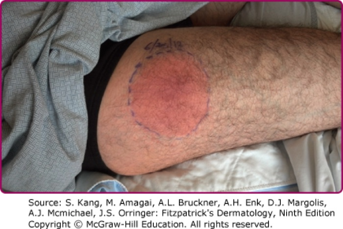
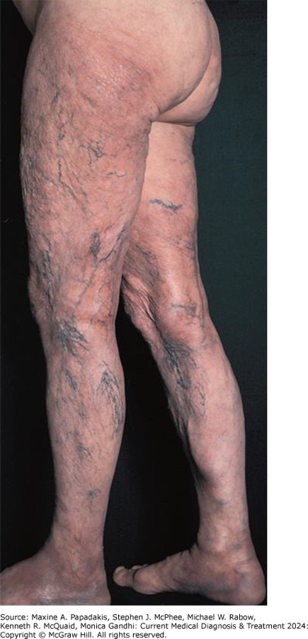
Fungal & Viral Skin Infections · slides 97–99, 102
The deck labels these explicitly as the three phases of the disease.
| Pre-eruptive (prodromal) | Dysesthesia or pain within the affected dermatome. Lesions appear by 48–72 hours. May have malaise, myalgia, headache, photophobia, rarely fever. |
| Acute eruptive | Erythematous macules and papules → grouped herpetiform vesicles on an erythematous base. New lesions over 3–5 days. Vesicles cloud, rupture, ulcerate, crust, dry. Infectious until the lesions have dried. Resolves over 10–15 days; complete healing may take a month. |
| Chronic — postherpetic neuralgia | Pain persisting 90 days or more after rash onset. Burning, aching, stabbing, electric shock-like, or evoked by light touch (allodynia). |
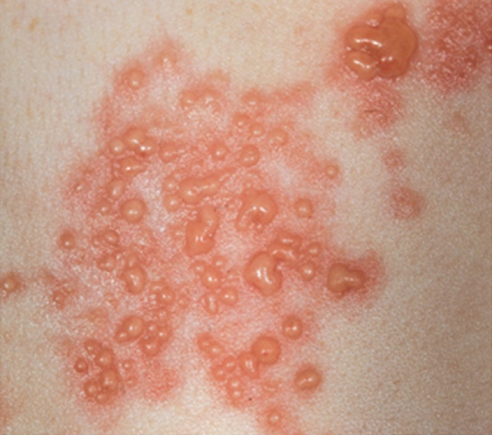
Fungal & Viral Skin Infections · slides 84, 89
Every individual lesion walks the same sequence, but the diagnostic point is that they do not walk it in step. Seeing several stages side by side at one moment is the finding.
| The sequence | Macule → papule → vesicle → crust. |
| The hallmark | Several stages appear simultaneously in the same patient — a generalised pruritic eruption “in multiple stages of healing”. |
| Distribution | Concentrated on the trunk, scalp and face. |
| Infectious period | From 1–2 days before the rash until all lesions crust. In breakthrough disease without crusts, until no new lesions appear for 24 hours. The lesions define this, not the fever. |
| Higher complication risk | Adults, pregnancy, newborn age, and immunocompromise. |
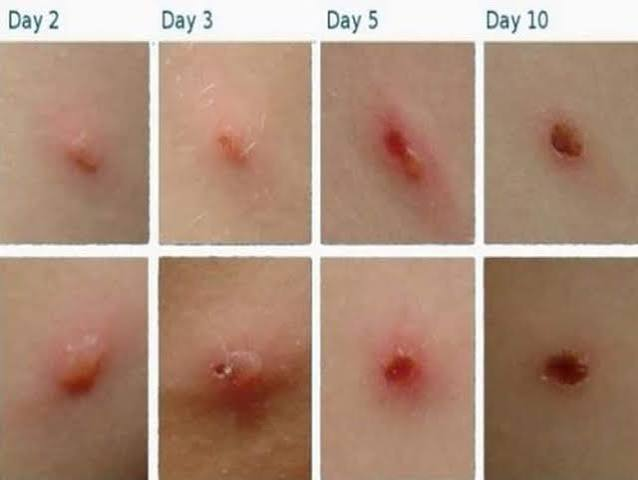
Benign Skin Lesions · slide 11
The deck names four phases and one mechanism for increasing strength.
| 1. Hemostasis | The first phase. |
| 2. Inflammation | — |
| 3. Proliferation | — |
| 4. Remodeling | As the scar matures, tensile strength improves through progressive cross-linking of collagen fibres — it is not fixed at closure. |
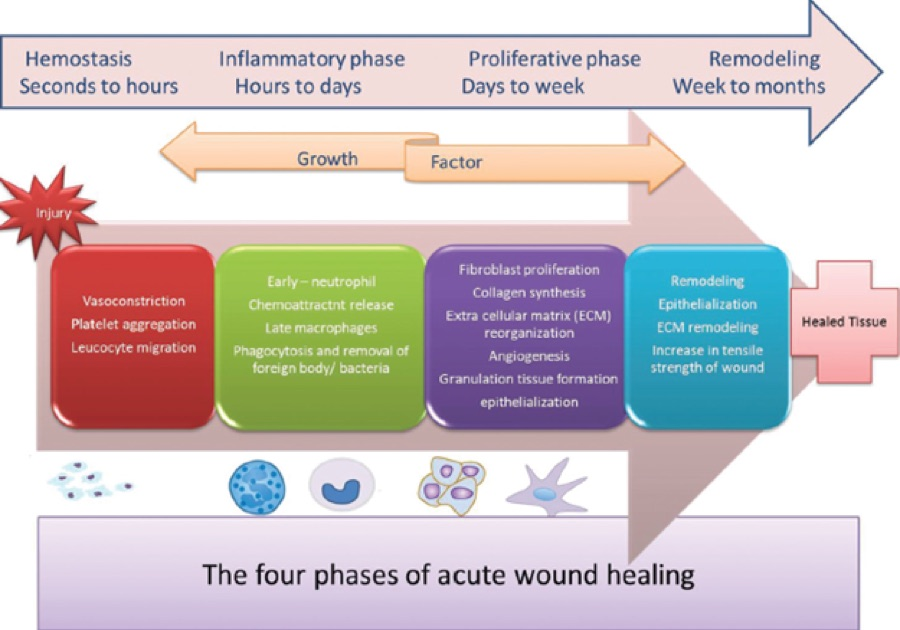
Benign Skin Lesions · slides 65–66
A biphasic natural history, which is what separates it from a vascular malformation that never involutes.
| Earliest sign | Blanching of the involved skin, then fine telangiectasias, then a red or crimson macule. |
| Proliferative | Rapid growth during the neonatal period (birth to 4 weeks); most growth in the first 4–6 months. |
| Involution | A subsequent slower involution phase. |
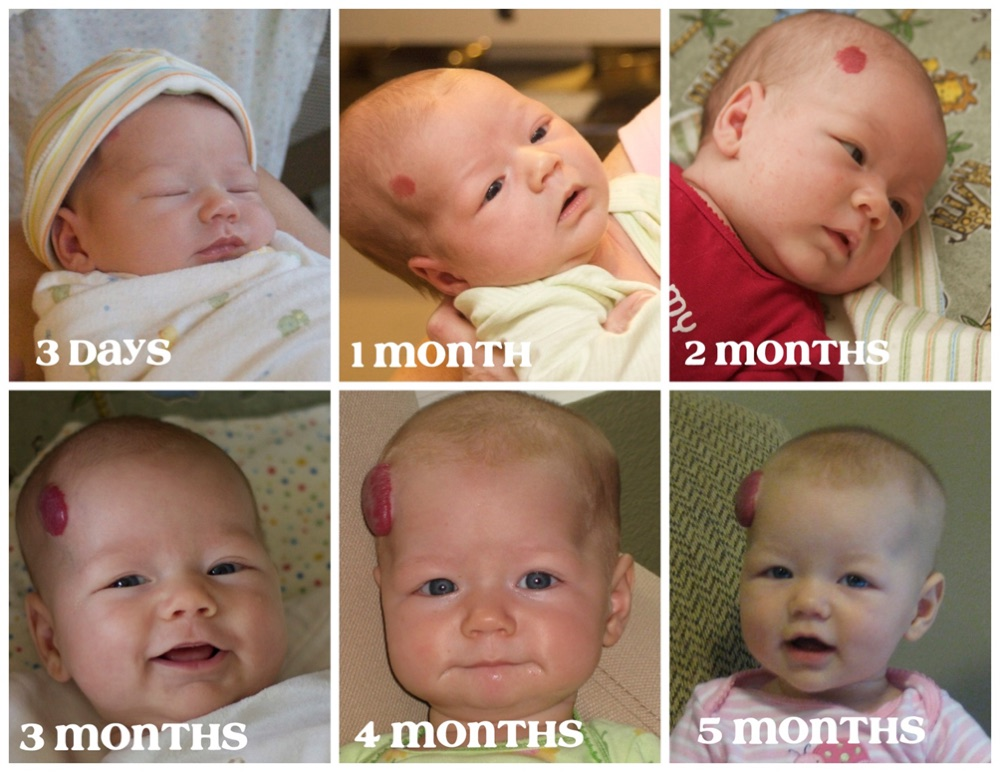
Benign Skin Lesions · slide 50
The deck calls this triphasic, and it is why the lesion is mistaken for benign.
| 1. Rapid growth | Within 6–8 weeks. |
| 2. Stabilisation | — |
| 3. Regression | After 3–6 months. It may instead continue growing or rarely metastasise, and it cannot be told from squamous cell carcinoma clinically — biopsy is the only reliable method. |
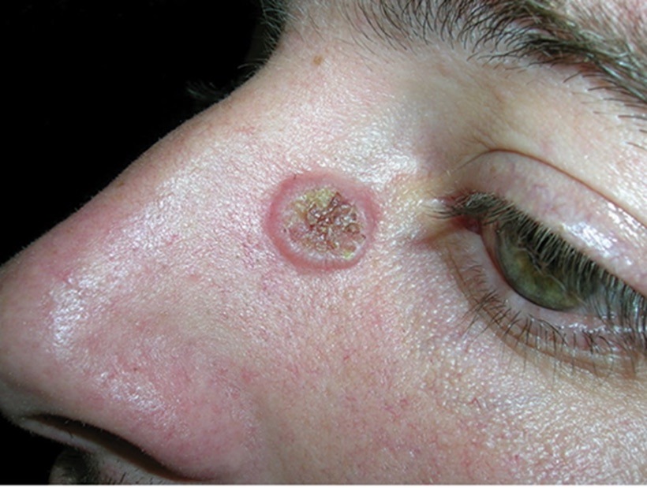
General Dermatology I · slide 46
Eczema changes appearance over time, so the same condition looks different depending on when it is seen.
| Acute | Erythema, oedema, papules, vesicles, oozing and crusting. |
| Subacute | Scaling, erythema, papules and excoriations. |
| Chronic | Xerosis, fissuring, lichenification and pigment alteration. |
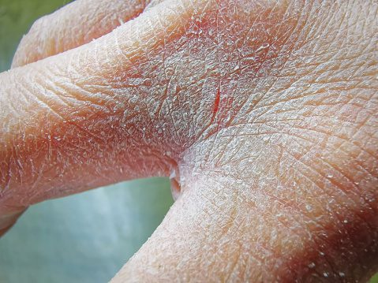
General Dermatology I · slides 41–42
Potency is selected by site and severity — low potency or a non-steroid on the face and eyelids, low to medium on the body. Usual application is twice daily for two weeks. Prolonged use causes atrophy, striae, telangiectasia and hypopigmentation.
| Mild | Hydrocortisone, all strengths — 0.1%, 0.5%, 1%, 2.5% |
| Moderate | Betamethasone valerate 0.025% |
| Medium to high | Triamcinolone acetonide 0.1% · betamethasone valerate 0.1% · betamethasone dipropionate 0.05% |
| High | Clobetasol propionate 0.05% |
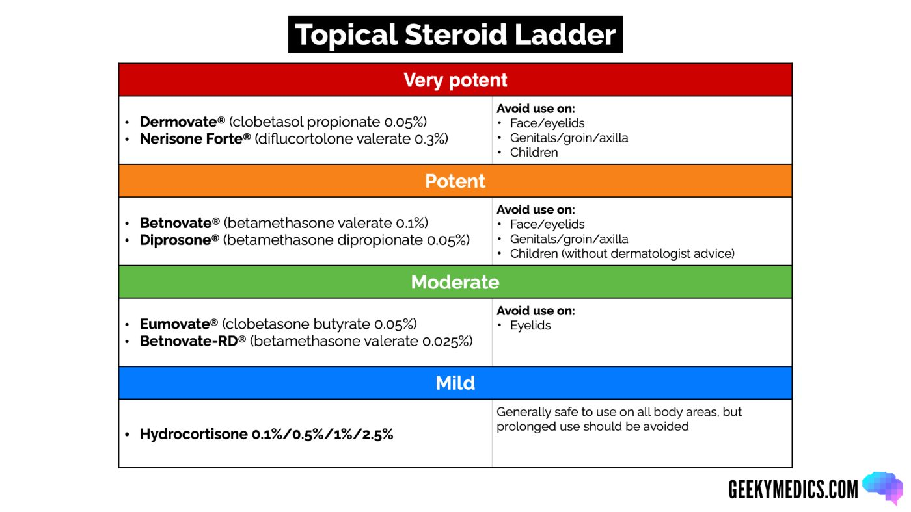
Cutaneous Bacterial Infections · slides 11–13, 32–33
The deck states there is “no universal classification system due to the extensive variety of clinical presentations,” then says an acne grading system may be helpful and lists what one should account for — number of lesions, type of lesions, disease severity, anatomical sites, scarring, quality of life. No numbered grades appear anywhere in the deck. Treatment is then given by severity band per the American Academy of Dermatology 2016 guideline, and those bands are the examinable ladder.
| Comedonal (non-inflammatory) | Topical retinoid. If not tolerated, azelaic acid or salicylic acid. |
| Mild papulopustular / mixed | Topical antimicrobial (benzoyl peroxide alone, or with a topical antibiotic) AND topical retinoid — or benzoyl peroxide AND a topical antibiotic if a retinoid cannot be tolerated. |
| Moderate papulopustular / mixed | Topical retinoid AND oral antibiotic AND topical benzoyl peroxide. |
| Severe (e.g. nodular) | Topical retinoid AND oral antibiotic AND topical benzoyl peroxide — OR oral isotretinoin monotherapy. |
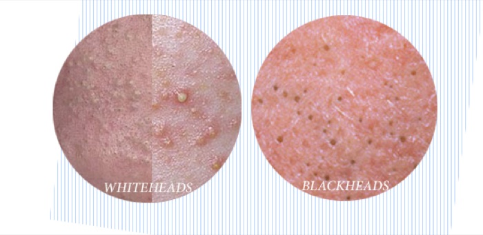
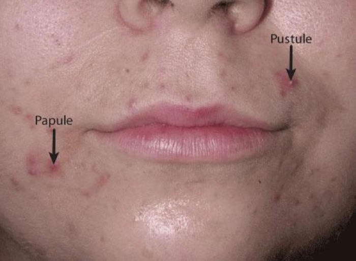
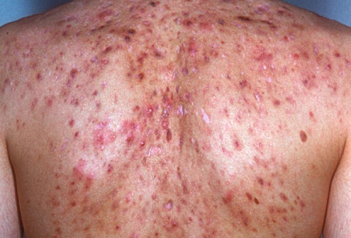
Pre-malignant & Malignant · slide 50
This slide is a figure with no text at all, so the levels below are read off the diagram's own anatomy. Clark level grades melanoma by which layer of skin it has reached. It has largely been superseded by Breslow thickness, which is the deck's stated dominant prognostic variable — but Clark levels still appear on pathology reports, so the ladder is worth recognising.
| Level I | Confined to the epidermis, above the basement membrane — melanoma in situ. |
| Level II | Invades into the papillary dermis. |
| Level III | Fills and expands the papillary dermis, down to the papillary–reticular interface. |
| Level IV | Invades the reticular dermis. |
| Level V | Invades the subcutaneous tissue. |
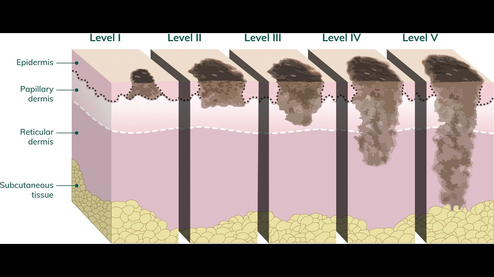
Pre-malignant & Malignant · slides 51–52, 55
Breslow thickness is the dominant prognostic variable and must be measured accurately on the initial biopsy — which is why a shave that transects the base compromises staging. Ulceration and mitotic rate modify stage-based prognosis.
| Re-excision — in situ | 0.5–1 cm margin |
| Re-excision — under 1 mm | 1 cm margin |
| Re-excision — over 1 mm | 1–2 cm margin |
| Sentinel lymph node biopsy | Offered or discussed at ≥1.0 mm Breslow thickness, or ≥0.8 mm with additional histologic risk factors (ulceration, high mitotic rate, lymphovascular invasion). It is a staging procedure. |
| Expert-centre referral | Melanoma deeper than 1 mm, or with lymph-node or other-site spread. |
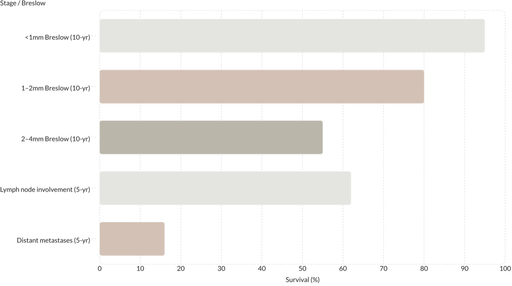
Pre-malignant & Malignant · slide 53
Another slide that is nothing but a picture. This is the plain-language version of the staging table below it: thickness carries you from 0 to II, and spread is what makes it III or IV.
| Stage 0 | “Melanoma confined to epidermal region of skin.” |
| Stage I | “Localized disease, only in skin and very thin.” |
| Stage II | “Localized disease, thicker than Stage I.” |
| Stage III | “Spread to lymph nodes.” |
| Stage IV | “Spread to other organs.” |
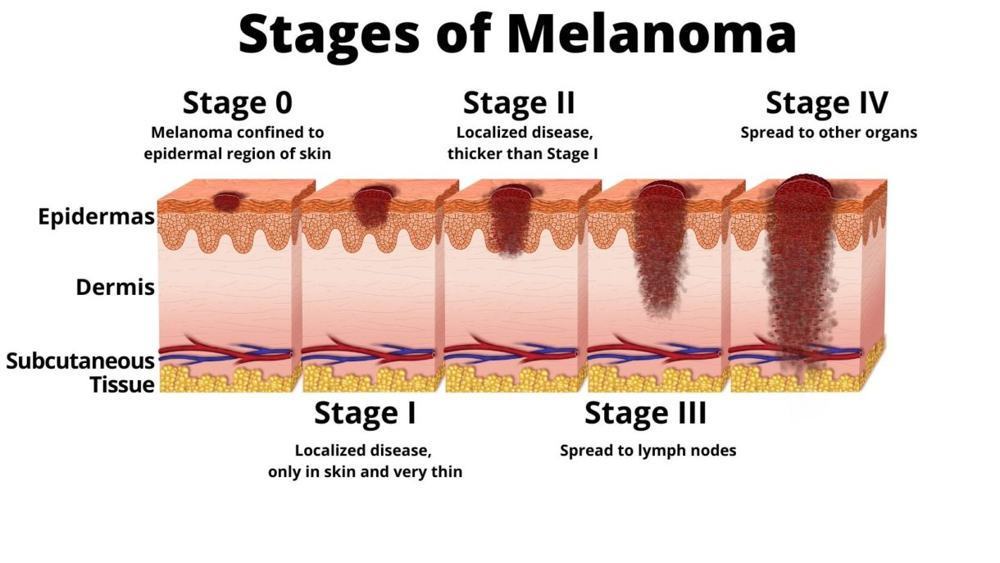
Pre-malignant & Malignant · slide 54
Image-only slide, transcribed. In this table T is primary tumour thickness, N the number of tumour-involved regional lymph nodes, and M the number of metastases at a distant site. Note the shape of it: every stage from 0 to IIC is N0 M0 — node-negative — and every stage III subgroup is M0 with positive nodes. Anything M1 is stage IV regardless of the tumour.
| 0 | Tis · N0 · M0 |
| IA | T1a or T1b · N0 · M0 |
| IB | T2a · N0 · M0 |
| IIA | T2b or T3a · N0 · M0 |
| IIB | T3b or T4a · N0 · M0 |
| IIC | T4b · N0 · M0 |
| IIIA | T1a/b or T2a · N1a or N2a · M0 |
| IIIB | T0 with N1b or N1c · T1a/b or T2a with N1b/c or N2b · T2b or T3a with N1a/b/c or N2a/b · all M0 |
| IIIC | T0 with N2b/c or N3b/c · T1a/b, T2a/b or T3a with N2c or N3a/b/c · T3b or T4a with any N ≥N1 · T4b with N1a/b/c or N2a/b/c · all M0 |
| IIID | T4b · N3a/b/c · M0 |
| IV | Any T, Tis · any N · M1 |
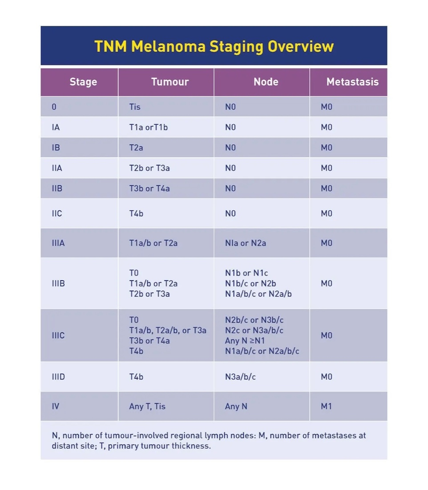
General Dermatology I · slides 9–15
Not staging, but the graded size cut-offs that decide which word is correct. 1 cm is the cut-off in three of the four pairs.
| Macule → patch | Flat, no elevation or depression. Macule <1 cm; patch >1 cm. |
| Papule → nodule | Elevated and solid. Papule <1 cm; nodule >1 cm. |
| Vesicle → bulla | Fluid filled. Vesicle up to <1 cm; bulla >1 cm. |
| Petechiae → purpura | Deposits of blood. Petechiae 1–2 mm; purpura ≥4 mm. Purpura is a medical emergency until proven otherwise. |
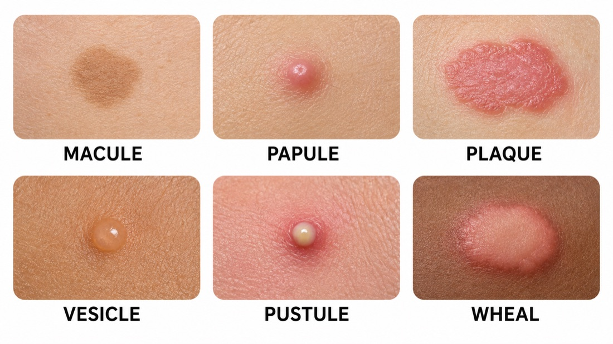
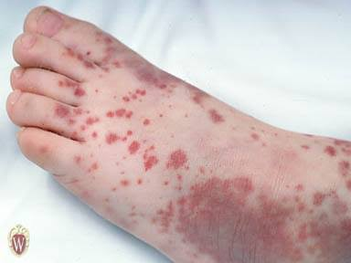